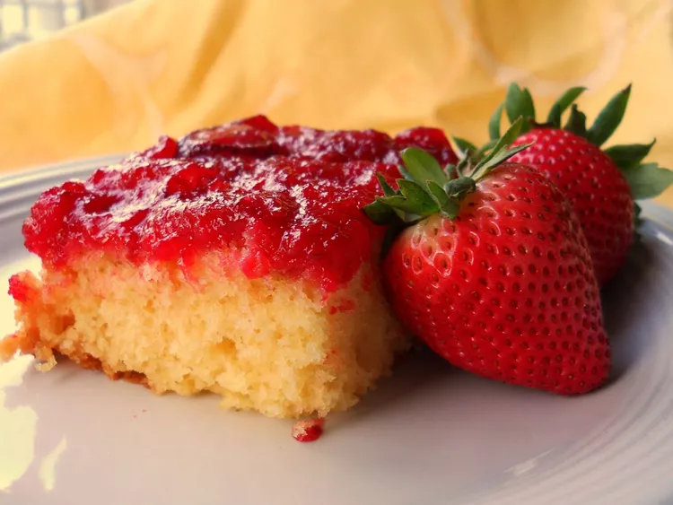

Freash Strawberry Upside Down Cake

Description
I live in Florida and have access to strawberries for a few months at a time. Many of my friends and neighbors can't wait until I start preparing this cake.
Ingredients
- 2 cups crushed fresh strawberries
- 1 (6 ounce) package strawberry flavored Jell-O® mix
- 3 cups miniature marshmallows
- 1 (18 ounce) package yellow cake mix, batter prepared as directed on package
Directions
- Preheat an oven to 350 degrees F (175 degrees C).
- Spread crushed strawberries on the bottom of a 9x13 inch baking pan. Evenly sprinkle strawberries with the dry gelatin powder, and top with mini marshmallows.
- Prepare the cake mix as directed on the package, and pour on top of the marshmallows. Bake in the preheated oven until a toothpick inserted into the center comes out clean, about 40 to 50 minutes. Cool in the pan for 15 minutes. Run a knife around the pan to loosen the sides, and turn the cake out onto a serving tray. Store cake in the refrigerator.